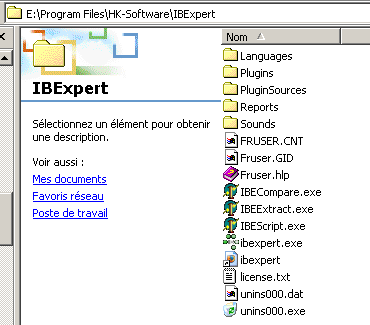
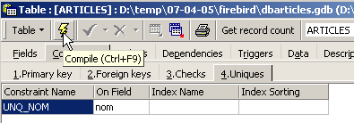
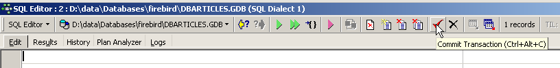
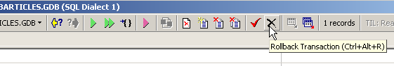
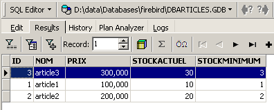

2. Tutorial do Firebird
Antes de abordarmos os conceitos básicos da linguagem SQL, apresentamos ao leitor como instalar o Firebird SGBD, bem como o cliente gráfico IB-Expert.
2.1. Onde encontrar o Firebird?
O site principal do Firebird é o [http://firebird.sourceforge.net/]. A página de downloads disponibiliza os seguintes links (abril de 2005):

Deve descarregar os seguintes ficheiros:
o SGBD para Windows | |
uma biblioteca de classes para as aplicações .NET que permite aceder ao SGBD sem passar por um controlador ODBC. | |
o controlador ODBC do Firebird |
Instale estes elementos. O SGBD é instalado numa pasta cujo conteúdo é semelhante ao seguinte:
 |
Os ficheiros binários encontram-se na pasta [bin]:
 |
permite iniciar/parar o SGBD | |
cliente de linha que permite gerir bases de dados |
Note-se que, por predefinição, o administrador do SGBD chama-se [SYSDBA] e a sua palavra-passe é [masterkey]. Foram instalados menus no [Démarrer]:

A opção [Firebird Guardian] permite iniciar/encerrar o SGBD. Após o arranque, o ícone do SGBD permanece na barra de tarefas do Windows:
 |
Para criar e utilizar bases de dados Firebird com o cliente de linha [isql.exe], é necessário consultar a documentação fornecida com o produto na pasta [doc].
2.2. A documentação do Firebird
A documentação sobre o Firebird e sobre a linguagem SQL pode ser consultada no site do Firebird (janeiro de 2006):

Estão disponíveis vários manuais em inglês:
para começar a utilizar o FB | |
para compreender os códigos de erro devolvidos pelo FB |
Estão igualmente disponíveis manuais de formação sobre a linguagem SQL:

para descobrir como criar tabelas, que tipos de dados podem ser utilizados, ... | |
o guia de referência para aprender SQL com o Firebird |
Uma forma rápida de trabalhar com o Firebird e de aprender a linguagem SQL é utilizar um cliente gráfico. Um exemplo desse tipo de cliente é o IB-Expert, descrito no parágrafo seguinte.
2.3. Trabalhar com o SGBD Firebird através do IB- Expert
O site principal do IB-Expert é [http://www.ibexpert.com/]. A página de downloads disponibiliza as seguintes ligações:

Escolheremos a versão gratuita [Personal Edition]. Depois de a descarregar e instalar, teremos uma pasta semelhante à seguinte:

O ficheiro executável é o [ibexpert.exe]. Normalmente, existe um atalho disponível no menu [Démarrer]:

Uma vez iniciado, o IBExpert apresenta a seguinte janela:

Vamos utilizar a opção [Database/Create Database] « » para criar uma base de dados:
pode ser [local] ou [remote]. Neste caso, o nosso servidor está na mesma máquina que o [IBExpert]. Por isso, escolhemos [local] | |
utilizar o botão do tipo [dossier] do menu suspenso para indicar o ficheiro da base de dados. O Firebird coloca toda a base de dados num único ficheiro. Esta é uma das suas vantagens. A base de dados é transferida de um computador para outro através de uma simples cópia do ficheiro. O sufixo [.gdb] é adicionado automaticamente. | |
SYSDBA é o administrador predefinido nas distribuições atuais do Firebird | |
«masterkey» é a palavra-passe do administrador SYSDBA das distribuições atuais do Firebird | |
o dialeto SQL a utilizar | |
se a caixa estiver marcada, o IBExpert apresentará um link para a base de dados criada após a sua criação |
Se, ao clicar no botão de criação [OK], receber o seguinte aviso:

significa que não iniciou o Firebird. Inicie-o. Aparece uma nova janela:

Família de caracteres a utilizar. Embora a captura de ecrã acima não apresente qualquer informação, é aconselhável selecionar na lista suspensa a família [ISO-8859-1], que permite utilizar caracteres latinos acentuados. |
O [IBExpert] é capaz de gerir diferentes SGBD derivados do Interbase. Selecione a versão do Firebird que tem instalada: |
Depois de esta nova janela ser validada pelo [Register], obtém-se o seguinte resultado:

Para aceder à base de dados criada, basta clicar duas vezes no respetivo link. O IBExpert apresenta então uma árvore de navegação que permite aceder às propriedades da base de dados:

2.4. Criação de uma tabela de dados
Vamos criar uma tabela. Clica-se com o botão direito do rato em [Tables] (ver janela acima) e seleciona-se a opção [New Table]. Aparece a janela de definição das propriedades da tabela:
 |
Comecemos por atribuir o nome [ARTICLES] à tabela, utilizando o campo de introdução [1]:
 |
Utilizemos o campo de introdução [2] para definir uma chave primária [ID]:
 |
Um campo é definido como chave primária clicando duas vezes na zona [PK] (Primary Key) do campo. Vamos adicionar campos com o botão situado acima de [3]:

Enquanto não tivermos «compilado» a nossa definição, a tabela não é criada. Utilizemos o botão [Compile] acima para concluir a definição da tabela. O IBExpert prepara as consultas SQL para a geração da tabela e solicita confirmação:

Curiosamente, o IBExpert apresenta as consultas SQL que executou. Isto permite aprender tanto a linguagem SQL como o dialeto SQL, que poderá ser proprietário. O botão [Commit] permite validar a transação em curso, enquanto o botão [Rollback] permite anulá-la. Aqui, aceitamo-la através de [Commit]. Feito isto, IBExpert adiciona a tabela criada à estrutura da nossa base de dados:

Ao clicar duas vezes na tabela, tem-se acesso às suas propriedades:

O painel [Constraints] permite-nos adicionar novas restrições de integridade à tabela. Vamos abri-lo:

Encontramos aqui a restrição de chave primária que criámos. Podemos adicionar outras restrições:
- chaves estrangeiras [Foreign Keys]
- restrições de integridade de campos [Checks]
- restrições de unicidade de campos [Uniques]
Note-se que:
- os campos [ID, PRIX, STOCKACTUEL, STOKMINIMUM] devem ser >0
- o campo [NOM] deve ser diferente de vazio e único
Abramos o painel [Checks] e cliquemos com o botão direito do rato na área de definição de restrições para adicionar uma nova restrição:

Definamos as restrições pretendidas:

Note-se acima que a restrição [NOM<>''] utiliza dois apóstrofos e não aspas. Compilemos estas restrições com o botão [Compile] acima:

Mais uma vez, a restrição IBExpert demonstra ser didática ao indicar as consultas SQL que executou. Passemos agora ao painel [Constraints/Uniques] para indicar que o nome deve ser único. Isto significa que não é possível ter duas vezes o mesmo nome na tabela.

Vamos definir a restrição:

Em seguida, compilemo-la. Feito isto, abramos o painel [DDL] (Data Definition Language) da tabela [ARTICLES]:

Este painel fornece o código SQL para a geração da tabela com todas as suas restrições. É possível guardar este código num script para o executar posteriormente:
SET SQL DIALECT 3;
SET NAMES NONE;
CREATE TABLE ARTICLES (
ID INTEGER NOT NULL,
NOM VARCHAR(20) NOT NULL,
PRIX DOUBLE PRECISION NOT NULL,
STOCKACTUEL INTEGER NOT NULL,
STOCKMINIMUM INTEGER NOT NULL
);
ALTER TABLE ARTICLES ADD CONSTRAINT CHK_ID check (ID>0);
ALTER TABLE ARTICLES ADD CONSTRAINT CHK_PRIX check (PRIX>0);
ALTER TABLE ARTICLES ADD CONSTRAINT CHK_STOCKACTUEL check (STOCKACTUEL>0);
ALTER TABLE ARTICLES ADD CONSTRAINT CHK_STOCKMINIMUM check (STOCKMINIMUM>0);
ALTER TABLE ARTICLES ADD CONSTRAINT CHK_NOM check (NOM<>'');
ALTER TABLE ARTICLES ADD CONSTRAINT UNQ_NOM UNIQUE (NOM);
ALTER TABLE ARTICLES ADD CONSTRAINT PK_ARTICLES PRIMARY KEY (ID);
2.5. Inserção de dados numa tabela
Chegou a altura de inserir dados na tabela [ARTICLES]. Para tal, vamos utilizar o seu painel [Data]:

Os dados são introduzidos clicando duas vezes nos campos de introdução de cada linha da tabela. Adiciona-se uma nova linha com o botão [+] e elimina-se uma linha com o botão [-]. Estas operações são realizadas numa transação que é validada através do botão [Commit Transaction] (ver acima). Sem esta validação, os dados serão perdidos.
2.6. O editor SQL de [IB-Expert]
A linguagem SQL (Structured Query Language) permite ao utilizador:
- criar tabelas, especificando o tipo de dados que estas irão armazenar e as restrições que esses dados devem cumprir
- inserir dados nessas tabelas
- alterar alguns dados
- eliminar outros
- explorar o seu conteúdo para obter informações
- ...
O IBExpert permite que um utilizador realize as operações 1 a 4 de forma gráfica. Acabámos de ver isso. Quando a base de dados contém muitas tabelas, cada uma com centenas de linhas, são necessárias informações difíceis de obter visualmente. Suponhamos, por exemplo, que uma loja virtual na Internet tenha milhares de compradores por mês. Todas as compras são registadas numa base de dados. Ao fim de seis meses, descobre-se que um produto «X» apresenta defeitos. Pretende-se contactar todas as pessoas que o compraram para que devolvam o produto para uma troca gratuita. Como encontrar as moradas desses compradores?
- É possível consultar visualmente todas as tabelas e procurar esses compradores. Isso demorará algumas horas.
- Pode-se emitir uma ordem SQL que fornecerá a lista dessas pessoas em poucos segundos
A linguagem SQL é útil sempre que
- a quantidade de dados nas tabelas for significativa
- quando há muitas tabelas interligadas
- quando a informação a obter está distribuída por várias tabelas
- ...
Apresentamos agora o editor SQL do IBExpert. Este está acessível através da opção [Tools/SQL Editor] ou [F12]:

Temos então acesso a um editor de consultas SQL avançado, com o qual podemos experimentar consultas. Digitemos uma consulta:

Executamos a consulta SQL com o botão [Execute] acima. Obtemos o seguinte resultado:

Acima, o separador [Results] apresenta a tabela de resultados da ordem SQL [Select]. Para emitir um novo comando SQL, basta voltar ao separador [Edit]. Encontramos então a ordem SQL, que já foi executada.

Vários botões da barra de ferramentas são úteis:
- o botão [New Query] permite passar para uma nova consulta SQL:

Obteve-se então uma página de edição em branco:

Pode-se então introduzir um novo comando SQL:

e executá-lo:

Voltemos ao separador [Edit]. As diferentes ordens SQL emitidas são memorizadas por [IB-xpert]. O botão [Previous Query] permite voltar a uma ordem SQL emitida anteriormente:

Voltamos então à consulta anterior:

O botão [Next Query] permite, por sua vez, avançar para a ordem seguinte, SQL:

Encontramos então a ordem SQL, que se segue na lista de ordens SQL guardadas:

O botão [Delete Query] permite eliminar uma ordem SQL da lista de ordens guardadas:

O botão [Clear Current Query] permite apagar o conteúdo do editor para a ordem SQL apresentada:

O botão [Commit] permite validar definitivamente as alterações efetuadas na base de dados:

O botão [RollBack] permite anular as alterações efetuadas na base de dados desde o último [Commit]. Se não tiver sido executado nenhum [Commit] desde a ligação à base de dados, serão anuladas as alterações efetuadas a partir dessa ligação.

Vejamos um exemplo. Inserimos uma nova linha na tabela:

O comando SQL é executado, mas não é apresentado qualquer resultado. Não se sabe se a inserção ocorreu. Para o verificar, executemos o comando SQL a seguir ao [New Query]:

O resultado obtido com o [Execute] é o seguinte:

A linha foi, portanto, inserida com sucesso. Vamos agora examinar o conteúdo da tabela de outra forma. Cliquemos duas vezes na tabela [ARTICLES] no explorador de bases de dados:
Obtemos a seguinte tabela:

O botão com seta acima permite atualizar a tabela. Após a atualização, a tabela acima não se altera. Fica-se com a impressão de que a nova linha não foi inserida. Voltemos ao editor SQL (F12) e, em seguida, validemos a ordem SQL emitida com o botão [Commit]:

Feito isto, voltemos à tabela [ARTICLES]. Podemos constatar que nada mudou, mesmo utilizando o botão [Refresh]:
Acima, vamos abrir o separador [Fields] e, em seguida, voltar ao separador [Data]. Desta vez, a linha inserida aparece corretamente:

Quando começa a emissão das diferentes ordens SQL, o editor abre o que se denomina uma transação na base de dados. As alterações efetuadas por estas ordens SQL do editor SQL só serão visíveis enquanto permanecermos no mesmo editor SQL (é possível abrir vários). É como se o editor SQL não estivesse a trabalhar na base de dados real, mas sim numa cópia própria. Na realidade, não é exatamente assim que as coisas acontecem, mas esta imagem pode ajudar-nos a compreender o conceito de transação. Todas as alterações efetuadas na cópia durante uma transação só serão visíveis na base de dados real quando tiverem sido validadas por um [Commit Transaction]. A transação atual é então concluída e inicia-se uma nova transação.
As alterações efetuadas durante uma transação podem ser anuladas por uma operação denominada [Rollback]. Vamos fazer a seguinte experiência. Iniciemos uma nova transação (basta executar o [Commit] na transação atual) com a ordem SQL seguinte:

Executemos esta ordem, que elimina todas as linhas da tabela [ARTICLES], e, em seguida, executemos [New Query], a nova ordem SQL, da seguinte forma:

Obtemos o seguinte resultado:

Todas as linhas foram eliminadas. Recorde-se que isto foi feito numa cópia da tabela [ARTICLES]. Para verificar, clique duas vezes na tabela [ARTICLES] abaixo:
e visualizemos o separador [Data]:

Mesmo utilizando o botão [Refresh] ou passando para o separador [Fields] para depois regressar ao separador [Data], o conteúdo acima não se altera. Isto já foi explicado. Estamos numa outra transação que trabalha com a sua própria cópia. Agora, voltemos ao editor SQL (F12) e utilizemos o botão [RollBack] para anular as eliminações de linhas que foram feitas:

É-nos solicitada uma confirmação:

Confirmemos. O editor SQL confirma que as alterações foram anuladas:

Vamos repetir a consulta SQL acima para verificar. Encontramos as linhas que tinham sido eliminadas:

A operação [Rollback] restaurou a cópia em que o editor SQL está a trabalhar, para o estado em que se encontrava no início da transação.